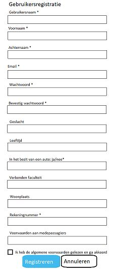

Requirement: 10
Use case: U8
Op deze pagina moet de klant zijn gebruikersnaam en wachtwoord kunnen invoeren. Er moeten dus twee velden zijn: een voor de gebruikersnaam en een voor het wachtwoord. Bij het wachtwoord moet het woord verdoezeld worden, dit moet weergeven worden met zwarte puntjes. Er moet een inlogknop zijn die, wanneer deze wordt ingedrukt, de inlogprocedure initieert.
Als het inloggen is gelukt, wordt de klant doorgestuurd naar de homepage. Als het inloggen niet is gelukt, geeft het een foutbericht weer en wordt er teruggegaan naar de login pagina. De gebruiker moet op deze pagina de mogelijkheid krijgen om de website te bezoeken in het Engels of in het Nederland. Als de pagina in het Nederlands wordt weergeven, zal er een switch zijn naar de Engelse webpagina en vice versa.
De gebruiker moet de mogelijkheid krijgen om zijn gebruikersnaam en wachtwoord te laten onthouden door de website. Er moet dus een selectievakje zijn om de gebruiker te onthouden: ‘Keep me logged in’/‘Houd mij ingelogd’.
Tot slot moet de gebruiker de mogelijkheid krijgen om zijn wachtwoord op te vragen als hij deze vergeten is (‘Forgot password’/‘Wachtwoord vergeten’), en de mogelijkheid om zich te registeren (‘New? Register here!’/‘Nieuw? Registreer hier!’).

SQL:
SELECT g.accountID, g.voornaam, g.achternaam
FROM Gebruiker AS g
WHERE g.Gebruikersnaam = ‘invoer gebruikersnaam’ (php)
AND g.Wachtwoord = ‘invoer wachtwoord’ (php)
Requirement: 6
Use case: U1
Is de klant nieuw en wil deze een account aanmaken, dan drukt hij of zij op de inlogpagina op ‘Nieuw? Registreer hier!’. De klant wordt dan doorgestuurd naar de pagina waarop hij zich kan registreren. Bovenaan de pagina moet aangegeven worden dat het om een gebruikersregistratie gaat. In het registratieformulier moeten de volgende dingen kunnen worden ingevuld en aangegeven: gebruikersnaam, voornaam, achternaam, email, wachtwoord, bevestig wachtwoord, geslacht, leeftijd, in het bezit van en auto: ja/nee, verbonden faculteit, woonplaats, rekeningnummer en voorwaarden aan medepassagiers.
Zeven van deze twaalf vakjes zijn verplicht om in te vullen en daarom moet achter deze specifieke vakken een sterretje staan waarmee dat wordt aangegeven.
Onderaan de pagina moet er nog akkoord worden gegaan met de voorwaarden. Dit moet worden gedaan door een vierkant vakje aan te klikken.
Tot slot is er de keus om door te gaan met registreren en om toch te annuleren. Registreren zal gebeuren met een lichtblauw vakje en annuleren met een wit vakje.
SQL:
Algemene registratie:
INSERT INTO ‘Gebruiker’ (‘Gebruikersnaam’, ‘Voornaam’, ‘Achternaam’, ‘Email’, ‘Wachtwoord’, ‘Bevestig wachtwoord’, ‘Geslacht’, ‘Leeftijd’, ‘In het bezit van een auto ja/nee’, ‘Verbonden faculteit’, ‘Woonplaats’, ‘Rekeningnummer’, ‘Voorwaarden aan medepassagiers’)
VALUES();
Meerijder registratie:
INSERT INTO ‘Meerijder’ (‘id’, ‘voorkeur_id’, ‘faculteit’)
VALUES();
Chauffeur registratie:
INSERT INTO ‘Chauffeur’ (‘id’, ‘voorkeur_id’, ‘auto_id’)
VALUES();
Requirement: 7
Use case: U2, U3
Als je succesvol bent ingelogd, word je doorgestuurd naar de homepagina. Op deze pagina zal de routekaart worden weergegeven waarop het vertrekpunt en de eindbestemming zijn aangegeven. Dit vertrekpunt en deze eindbestemming kunnen worden ingevoerd aan de linkerkant van het scherm. Hieronder kunnen de gewenste datum en vertrektijd/aankomsttijd worden ingevoerd. Er kan gekozen worden voor een vertrektijd of een aankomsttijd. Dit is een optie dat wordt aangeduid met een knop: Vertrektijd|Aankomsttijd.
In het midden van het scherm zal de kaart met de eindbestemming en het vertrekpunt worden weergeven. Deze twee punten worden door middel van een rode stip aangegeven.
Rechts op de pagina zullen er snelkoppelingen zijn naar de wallet, het account, de chatberichten, de statistieken, en help. Rechtsonderin zal het logo van ons platform Carpool for Uni weergeven worden.
SQL:
Als chauffeur:
INSERT INTO ‘Rit’ (‘Rit_id’, ‘Account_id’, ‘Vertrekpunt’, ‘Eindbestemming’, ‘Datum’ ‘Vertrektijd|Aankomsttijd’)
VALUES();
Als meerijder:
INSERT INTO ‘Rit’ (‘Account_id’, ‘Vertrekpunt’, ‘Eindbestemming’, ‘Datum’ ‘Vertrektijd|Aankomsttijd’)
VALUES();
Requirement: 4
Use case: U5
Op deze pagina moet de chat tussen de klant en de chauffeur beschikbaar zijn. Zij moeten de mogelijkheid hebben om met elkaar te communiceren. De berichten van de klant zullen weergeven worden in het paars en de berichten van de chauffeur in het donkergroen. De namen van zowel de klant als de gebruiker zullen bekend zijn.
Bovenin het scherm moet de naam van de persoon met wie het gesprek wordt gevoerd duidelijk zichtbaar zijn.
Zowel de klant als de chauffeur moet de mogelijkheid hebben om een nieuw gesprek te beginnen. Deze optie wordt rechtsonder weergegeven met behulp van een ‘begin een nieuw gesprek’-knop.
Rechts in het scherm moet er de mogelijkheid zijn om te switchen naar een ander gesprek. De verschillende gebruikers worden onder elkaar weergeven en de naam van de persoon met wie er op dat moment een gesprek wordt gevoerd, wordt in het paars weergegeven.

SQL:
INSERT INTO ‘Berichtendienst’ (‘berichten_id’, ‘communicatie_meerijder’, ‘communicatie_chauffeur’)
VALUES();
Requirement: 13
Use case: U3, U4, U9
Er zijn twee manieren waarop een ritverzoek kan worden geweigerd of kan worden geaccepteerd. De eerste manier is als een pop-up. Er zal dan tijdens het gebruik van de applicatie of de website een schermpje oplicht dat het ritverzoek laat zien. De naam van de persoon van het ritverzoek moet groot weergeven worden aan de bovenkant van de pop-up. Er zal worden weergeven waar de klant vandaan komt en waar hij of zij naar toe wilt. De datum en de tijd waarop de klant dit wil zal ook worden weergeven.
De chauffeur moet dan de mogelijkheid hebben om dit verzoek te accepteren of te weigeren. Beide opties zullen worden weergeven door een zwart omlijnde rechthoek.
Onderaan de pop-up moet de optie tevoorschijn komen waarmee de chauffeur een chat kan starten met de klant. De chauffeur moet de mogelijkheid hebben om eerst met de klant te kunnen chatten voordat hij of zij deze klant weigert of accepteert. Wellicht wilt de chauffeur namelijk eerst duidelijk maken dat er niet gerookt mag worden in zijn auto bijvoorbeeld.

De tweede manier waarop een verzoek bekend wordt, is door een email. Hierin zal dezelfde informatie staan als in de pop-up. Het enige verschil is echter dat er via de mail niet direct een keuze kan worden gemaakt tussen weigeren of accepteren. Hiervoor moet er eerst naar de website worden gegaan. Dat gebeurt door te klikken op de knop: ‘Weigeren/accepteren?’
SQL:
SELECT g.account_id, g.voornaam, g.achternaam, g.woonplaats
FROM chauffeur JOIN meerijder ON chauffeur_id = meerijder_id
WHERE rit.beschikbaarheid >= 1
AND c.voorkeur_id = m.voorkeur_id